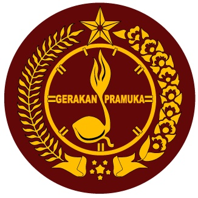
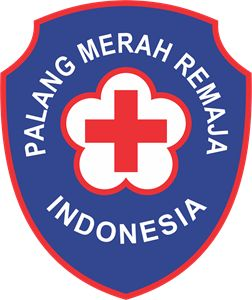
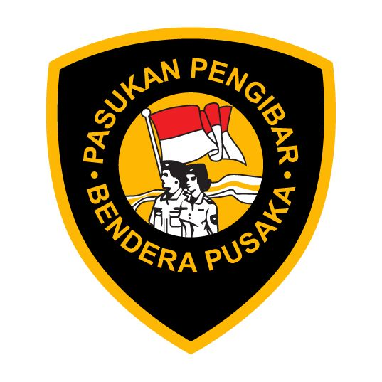
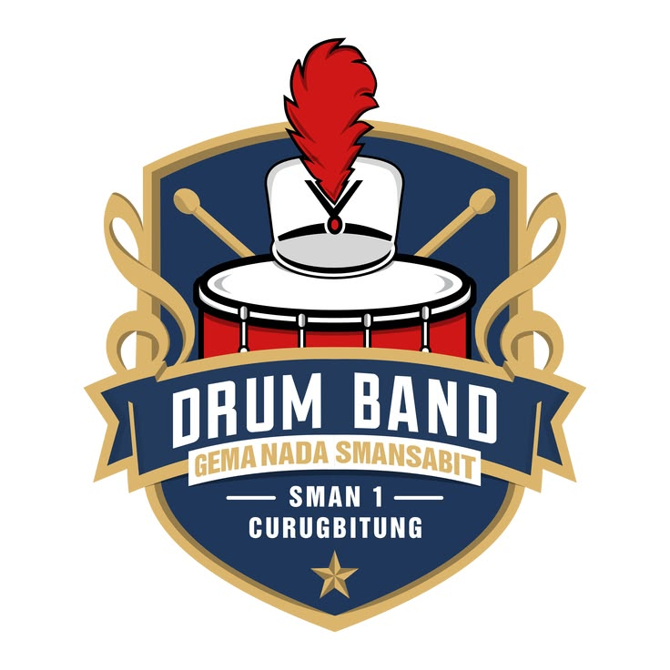
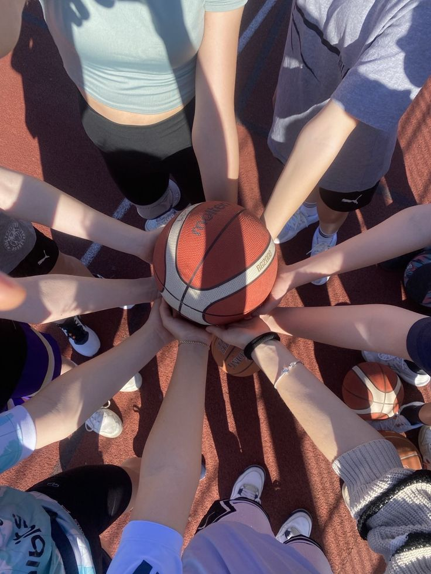

Kepanduan
Pramuka
Membina kemandirian, kedisiplinan, dan jiwa kepemimpinan peserta didik melalui kegiatan kepanduan yang bersifat wajib bagi kelas X.
Kegiatan Peserta Didik
Wadah pengembangan minat dan bakat peserta didik di luar kegiatan belajar mengajar reguler, dilaksanakan secara terjadwal setiap pekan.

Kepanduan
Membina kemandirian, kedisiplinan, dan jiwa kepemimpinan peserta didik melalui kegiatan kepanduan yang bersifat wajib bagi kelas X.

Kesehatan & Sosial
Melatih keterampilan pertolongan pertama, kepedulian sosial, dan kesiapsiagaan menghadapi situasi darurat di lingkungan sekolah.

Baris-Berbaris
Membentuk sikap tegas, kekompakan tim, dan kesiapan bertugas dalam upacara bendera serta acara kenegaraan tingkat sekolah.

Seni Musik
Mengembangkan kemampuan bermusik dan kekompakan formasi, kerap tampil pada acara sekolah maupun undangan tingkat kota.

Olahraga
Menyalurkan minat olahraga sekaligus mempersiapkan peserta didik untuk berbagai kompetisi antarsekolah.
Akademik
Melatih kemampuan berpikir kritis dan metode penelitian melalui penyusunan karya tulis ilmiah tingkat pelajar.
Kerohanian
Memperdalam pemahaman keagamaan dan membina akhlak peserta didik melalui kajian rutin dan kegiatan sosial keagamaan.
Seni Suara
Mewakili sekolah dalam upacara resmi dan lomba paduan suara, sekaligus mengasah kepekaan bermusik peserta didik.